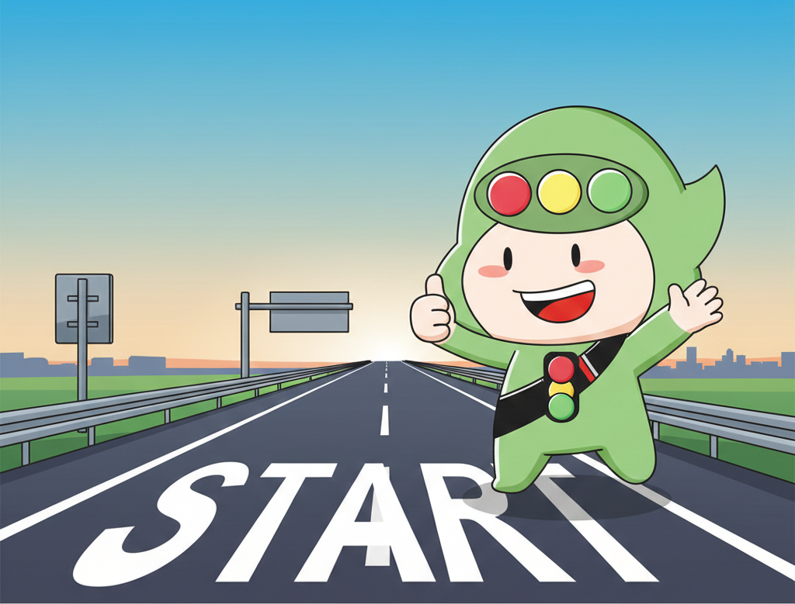
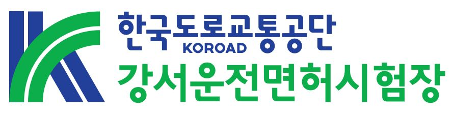

🚗 드라이빙 소울 테스트 🚗
도로 위에서 또 다른 당신의 모습,
운전대를 잡은 당신은 어떤 성격일까요?

당신에 대해 알려주세요!
나의 드라이빙 소울은
💡 베스트 드라이버가 되는 법
⚠️ 꼭 기억할 안전운전 포인트
🔄 다시 테스트하기

도로 위에서 또 다른 당신의 모습,
운전대를 잡은 당신은 어떤 성격일까요?

나의 드라이빙 소울은
🔄 다시 테스트하기